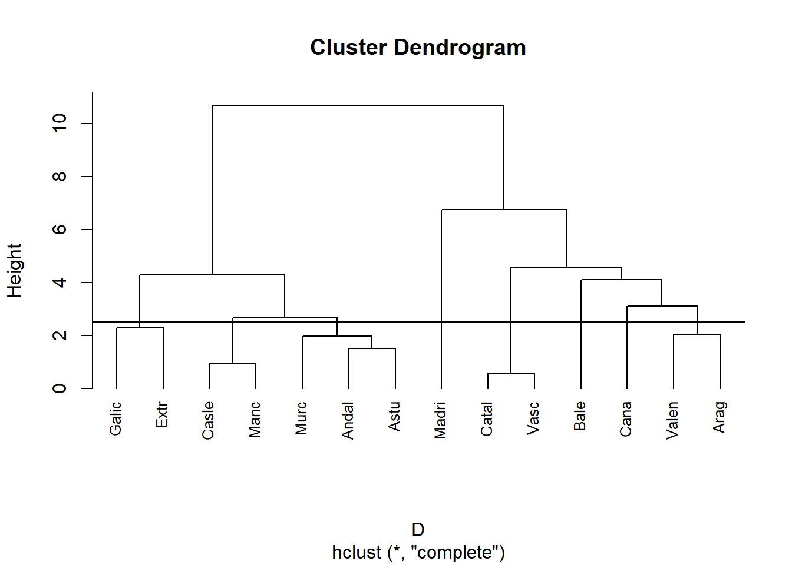
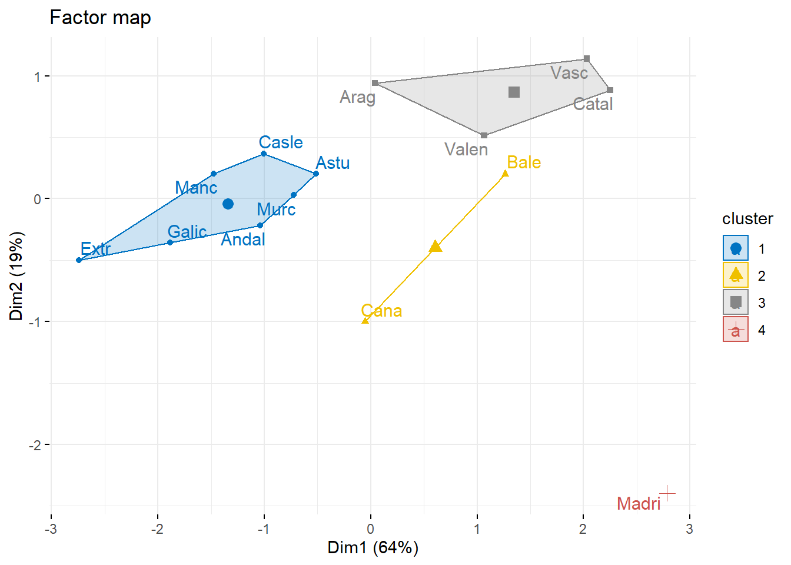
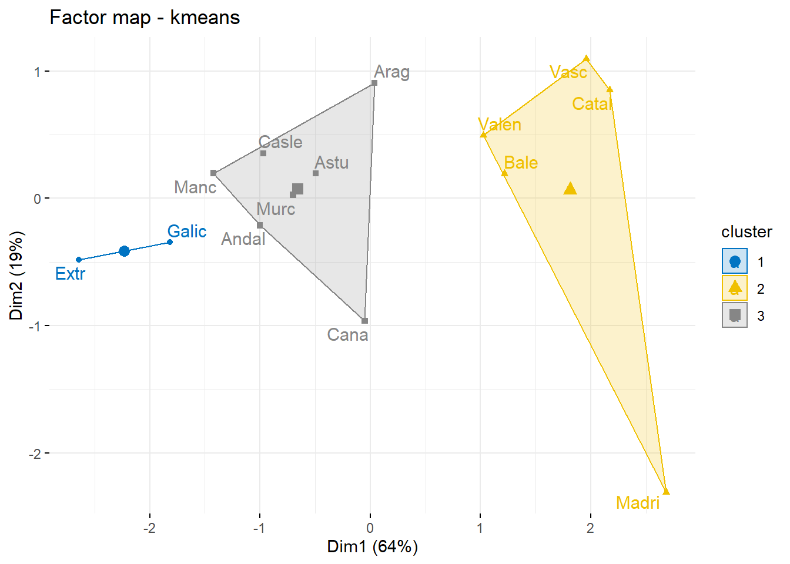
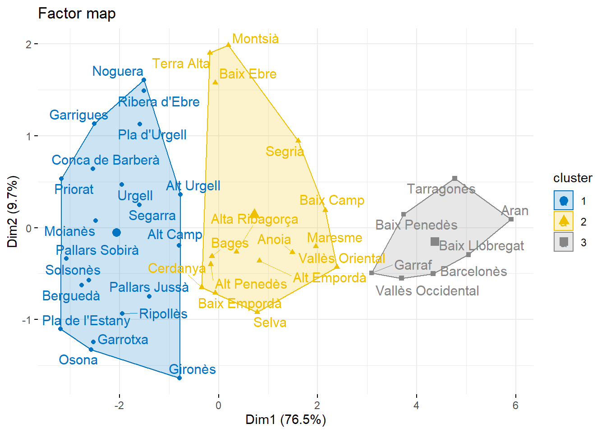
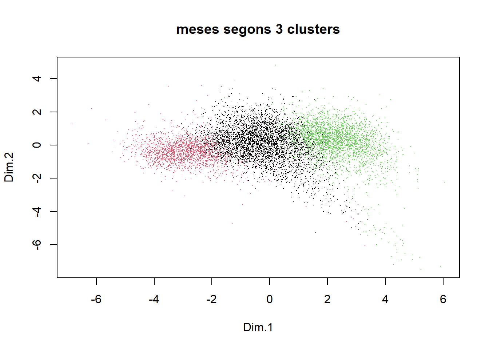

Capítol 8 Teoria Setmana 8
8.1 Dades de Comunitats
8.1.1 Cluser jerarquic
suppressPackageStartupMessages(library(tidyverse))
library(foreign)
data<-read.table("http://www.econ.upf.edu/~satorra/dades/CommAA.dat", header=T)
dim(data)## [1] 14 5head(data)## comm denpob pacagri pacind recap
## 1 Andal 70.1 30.41 17.30 10.31
## 2 Catal 176.9 7.99 42.81 13.75
## 3 Madri 543.4 2.41 27.49 12.59
## 4 Valen 144.9 16.84 35.14 12.24
## 5 Casle 33.3 36.30 21.60 11.28
## 6 Galic 91.0 51.26 15.66 10.59Preparem dades. On veiem que cadascuna té una escala (concepte) diferent.
X<- data[,-1]
rownames(X) <- data[,1]
head(X)## denpob pacagri pacind recap
## Andal 70.1 30.41 17.30 10.31
## Catal 176.9 7.99 42.81 13.75
## Madri 543.4 2.41 27.49 12.59
## Valen 144.9 16.84 35.14 12.24
## Casle 33.3 36.30 21.60 11.28
## Galic 91.0 51.26 15.66 10.59Estandarditzem per tal que totes tinguin un mateix per d’entrada.
Xs <- scale(X)
head(Xs)## denpob pacagri pacind recap
## Andal -0.4150286 0.3279974 -0.7390670 -0.5798760
## Catal 0.3927698 -1.2283417 1.7286816 0.9478498
## Madri 3.1648497 -1.6156911 0.2466781 0.4326865
## Valen 0.1507329 -0.6139973 0.9867125 0.2772493
## Casle -0.6933711 0.7368662 -0.3231000 -0.1490928
## Galic -0.2569482 1.7753512 -0.8977149 -0.4555262Calculem les distancies euclidianes.
D <- dist(Xs, method = "euclidean", upper = TRUE)
D## Andal Catal Madri Valen Casle Galic Vasc Manc Cana Arag Astu Extr
## Andal 3.3909378 4.3116621 2.2182017 0.7766923 1.4698484 3.2980609 0.6605585 1.4623037 1.5499263 1.1044931 1.7144509
## Catal 3.3909378 3.2087683 1.1984257 3.2333938 4.2792204 0.3331301 3.6614647 3.1455752 2.1936506 2.7668095 4.9975131
## Madri 4.3116621 3.2087683 3.2649812 4.5916782 5.0305493 3.4879479 4.8382780 3.4093477 4.2305984 4.0480511 5.6487024
## Valen 2.2182017 1.1984257 3.2649812 2.1058775 3.1564563 1.1182685 2.4848682 2.2402105 1.2026903 1.5884374 3.8046755
## Casle 0.7766923 3.2333938 4.5916782 2.1058775 1.3011533 3.0831397 0.6502605 1.8076834 1.1820547 1.0796414 1.9299497
## Galic 1.4698484 4.2792204 5.0305493 3.1564563 1.3011533 4.1537258 1.2238615 2.3287132 2.4349853 1.8804045 1.2985500
## Vasc 3.2980609 0.3331301 3.4879479 1.1182685 3.0831397 4.1537258 3.5159503 3.1763875 2.0113188 2.6355331 4.8722182
## Manc 0.6605585 3.6614647 4.8382780 2.4848682 0.6502605 1.2238615 3.5159503 2.0728205 1.6477985 1.1239719 1.4014910
## Cana 1.4623037 3.1455752 3.4093477 2.2402105 1.8076834 2.3287132 3.1763875 2.0728205 2.0248524 2.0732836 2.8703509
## Arag 1.5499263 2.1936506 4.2305984 1.2026903 1.1820547 2.4349853 2.0113188 1.6477985 2.0248524 1.2594662 3.0425874
## Astu 1.1044931 2.7668095 4.0480511 1.5884374 1.0796414 1.8804045 2.6355331 1.1239719 2.0732836 1.2594662 2.3176976
## Extr 1.7144509 4.9975131 5.6487024 3.8046755 1.9299497 1.2985500 4.8722182 1.4014910 2.8703509 3.0425874 2.3176976
## Murc 1.1290951 3.1269558 4.2036965 1.9826666 1.5090162 2.2679203 3.0268689 1.2541501 2.1973882 1.6928121 0.8451783 2.2417440
## Bale 3.0349693 2.6586091 3.9049427 2.4633526 2.8415961 3.6516151 2.6861571 3.4173891 2.1261708 2.3450076 3.2477084 4.5173429
## Murc Bale
## Andal 1.1290951 3.0349693
## Catal 3.1269558 2.6586091
## Madri 4.2036965 3.9049427
## Valen 1.9826666 2.4633526
## Casle 1.5090162 2.8415961
## Galic 2.2679203 3.6516151
## Vasc 3.0268689 2.6861571
## Manc 1.2541501 3.4173891
## Cana 2.1973882 2.1261708
## Arag 1.6928121 2.3450076
## Astu 0.8451783 3.2477084
## Extr 2.2417440 4.5173429
## Murc 3.6387133
## Bale 3.63871338.1.1.1 Distancia Manhattan
Altres distancies:
- manhattan: O distancia de l’eixample. Es a dir, per moure’s d’un punt a un altre, no anem en linia recta si no pels catets (o costats) del cuadrat.
D <- dist(Xs, method = "manhattan", upper = TRUE)
D## Andal Catal Madri Valen Casle Galic Vasc Manc Cana Arag Astu
## Andal 6.3596120 7.5218744 4.0906609 1.5339615 1.8884319 5.9511870 1.2432345 2.8344246 2.7703511 1.5111809
## Catal 6.3596120 5.1565960 2.2689511 6.2000731 7.6831835 0.5806160 7.1481849 4.4751400 4.2775536 5.2373374
## Madri 7.5218744 5.1565960 4.9112822 7.3623356 8.8454459 5.6395086 8.3104473 5.6374024 5.8190232 6.5563129
## Valen 4.0906609 2.2689511 4.9112822 3.9311221 5.4142324 1.8832170 4.8792338 2.8603418 2.0352489 2.9683863
## Casle 1.5339615 6.2000731 7.3623356 3.9311221 2.3559563 5.7916481 0.9481118 3.5068198 2.0541271 2.1174123
## Galic 1.8884319 7.6831835 8.8454459 5.4142324 2.3559563 7.2747585 2.2098027 3.8407003 4.4100834 2.9876559
## Vasc 5.9511870 0.5806160 5.6395086 1.8832170 5.7916481 7.2747585 6.7397599 4.5659163 3.8691286 4.8289124
## Manc 1.2432345 7.1481849 8.3104473 4.8792338 0.9481118 2.2098027 6.7397599 4.0776591 2.8706313 1.9108475
## Cana 2.8344246 4.4751400 5.6374024 2.8603418 3.5068198 3.8407003 4.5659163 4.0776591 3.1030636 3.8403533
## Arag 2.7703511 4.2775536 5.8190232 2.0352489 2.0541271 4.4100834 3.8691286 2.8706313 3.1030636 2.1533286
## Astu 1.5111809 5.2373374 6.5563129 2.9683863 2.1174123 2.9876559 4.8289124 1.9108475 3.8403533 2.1533286
## Extr 3.1688291 9.5284411 10.6907036 7.2594901 3.3283680 2.2950827 9.1200161 2.4558928 5.0533012 5.2690403 4.2911038
## Murc 1.9706621 5.8189723 6.9812348 3.5500213 2.6726896 3.7441264 5.4105473 2.3950678 3.7835273 2.4904556 1.5840229
## Bale 4.4362220 4.5702639 6.7628531 3.6425140 4.5204591 5.7597934 4.2595423 5.2247948 3.4382104 4.1167029 4.8539927
## Extr Murc Bale
## Andal 3.1688291 1.9706621 4.4362220
## Catal 9.5284411 5.8189723 4.5702639
## Madri 10.6907036 6.9812348 6.7628531
## Valen 7.2594901 3.5500213 3.6425140
## Casle 3.3283680 2.6726896 4.5204591
## Galic 2.2950827 3.7441264 5.7597934
## Vasc 9.1200161 5.4105473 4.2595423
## Manc 2.4558928 2.3950678 5.2247948
## Cana 5.0533012 3.7835273 3.4382104
## Arag 5.2690403 2.4904556 4.1167029
## Astu 4.2911038 1.5840229 4.8539927
## Extr 3.7094688 7.6050511
## Murc 3.7094688 4.7971666
## Bale 7.6050511 4.79716668.1.1.2 Mètode “Complete”
Mesurem la distancia entre dos clusters com el màxim de les distancies 2 a 2.
hc<-hclust(D, method = "complete")
plot(hc, lab=data[,1], cex=0.8, hang = -1)
abline(h=2.5)
Segmentem per alçada.
cutree(hc,h = 2.5)## Andal Catal Madri Valen Casle Galic Vasc Manc Cana Arag Astu Extr Murc Bale
## 1 2 3 4 5 6 2 5 7 4 1 6 1 8Segmentem per número de grups.
data$grups <- cutree(hc,k = 4)
data$grups## [1] 1 2 3 4 1 1 2 1 4 4 1 1 1 4Representem mitjanes.
aggregate(X,list(data$grups),mean)## Group.1 denpob pacagri pacind recap
## 1 1 60.31429 36.8600 19.69143 9.851429
## 2 2 160.15000 9.3750 43.25500 13.695000
## 3 3 543.40000 2.4100 27.49000 12.590000
## 4 4 115.92500 20.1025 24.33000 13.4200008.1.1.3 Mètode “single”
Mesurem la distancia entre dos clusters com el mínim de les distancies 2 a 2.
hc<-hclust(D, method = "single")
plot(hc, lab=data[,1], cex=0.8, hang = -1)
abline(h=2.5)8.1.1.4 Mètode “single”
Altres métodes:
- average: mitajana de totes les distancies 2 a 2.
- centroid: distancia entre els centroides de cada cluster.
metodes hclust
8.1.2 Cluster jerarquis sobre components principals
Evita redundancies en les variabels.
library(FactoMineR)
library(factoextra)
# components principals
res.pca <- PCA(Xs, ncp = 4, graph = FALSE)
# cluster jerarquic
res.hcpc <- HCPC(res.pca, nb.clust=4,graph = FALSE)
fviz_dend(res.hcpc,
cex = 0.7, # Label size
palette = "jco", # Color palette see ?ggpubr::ggpar
rect = TRUE, rect_fill = TRUE, # Add rectangle around groups
rect_border = "jco", # Rectangle color
labels_track_height = 0.8 # Augment the room for labels
)fviz_cluster(res.hcpc,
repel = TRUE, # Avoid label overlapping
show.clust.cent = TRUE, # Show cluster centers
palette = "jco", # Color palette see ?ggpubr::ggpar
ggtheme = theme_minimal(),
main = "Factor map"
)
8.1.3 Cluster no jerarquic
kmeans: Mètode iteratius
######### K-means: f kmeans()
#help(hclust)
km <- kmeans(D,3)
groups <- km$cluster
km$centers## Andal Catal Madri Valen Casle Galic Vasc Manc Cana Arag Astu Extr Murc Bale
## 1 2.528630 8.605812 9.768075 6.336861 2.842162 1.147541 8.197387 2.332848 4.447001 4.839562 3.639380 1.147541 3.726798 6.682422
## 2 5.671911 2.515285 4.494048 2.541193 5.561128 6.995483 2.472577 6.460484 4.195402 4.023531 4.888988 8.840740 5.311588 3.847035
## 3 1.694831 5.645268 6.884090 3.473574 1.833303 3.062394 5.308157 1.920793 3.020835 2.205994 1.873878 3.896572 2.128061 4.483936aggregate(data[,-1],list(data$grup),mean)## Group.1 denpob pacagri pacind recap grups
## 1 1 60.31429 36.8600 19.69143 9.851429 1
## 2 2 160.15000 9.3750 43.25500 13.695000 2
## 3 3 543.40000 2.4100 27.49000 12.590000 3
## 4 4 115.92500 20.1025 24.33000 13.420000 4fviz_cluster(km,
data=Xs,
repel = TRUE, # Avoid label overlapping
show.clust.cent = TRUE, # Show cluster centers
palette = "jco", # Color palette see ?ggpubr::ggpar
ggtheme = theme_minimal(),
main = "Factor map - kmeans"
)
8.2 Dades eleccions parlament 2021
d <- read.csv("www/data/mesa2021.csv", fileEncoding = "utf-8")
dim(d)## [1] 9139 67d<- d %>%
mutate(N_PSC=Vots.PARTIT.DELS.SOCIALISTES.DE.CATALUNYA..PSC.PSOE...PSC.
,N_ERC=Vots.ESQUERRA.REPUBLICANA.DE.CATALUNYA..ERC.
,N_JxCat=Vots.JUNTS.PER.CATALUNYA..JxCat.
,N_VOX=Vots.VOX..VOX.
,N_CUP=Vots.CANDIDATURA.D.UNITAT.POPULAR.UN.NOU.CICLE.PER.GUANYAR..CUP.G.
,N_COMUNS=Vots.EN.COMÚ.PODEM.PODEM.EN.COMÚ..ECP.PEC.
,N_Cs=Vots.CIUTADANS...PARTIDO.DE.LA.CIUDADANÍA..Cs.
,N_PP=Vots.PARTIT.POPULAR.PARTIDO.POPULAR..PP.
,N_TOT = N_PSC + N_ERC + N_JxCat + N_VOX + N_CUP + N_COMUNS + N_Cs + N_PP
,municipi=Nom.municipi,comarca=Nom.comarca)
dmesa<-d %>%
filter(N_TOT>0) %>%
mutate(PSC = N_PSC / N_TOT
,ERC = N_ERC / N_TOT
,JxCat = N_JxCat / N_TOT
,VOX = N_VOX / N_TOT
,CUP = N_CUP / N_TOT
,COMUNS = N_COMUNS / N_TOT
,Cs = N_Cs / N_TOT
,PP = N_PP / N_TOT
) %>%
select(Districte,Secció,Mesa,municipi,comarca,PSC,ERC,JxCat,VOX,CUP,COMUNS,Cs,PP)
dmun <- d %>%
filter(N_TOT>0) %>%
group_by(municipi,comarca) %>%
summarise(PSC = sum(N_PSC) / sum(N_TOT)
,ERC = sum(N_ERC) / sum(N_TOT)
,JxCat = sum(N_JxCat) / sum(N_TOT)
,VOX = sum(N_VOX) / sum(N_TOT)
,CUP = sum(N_CUP) / sum(N_TOT)
,COMUNS = sum(N_COMUNS) / sum(N_TOT)
,Cs = sum(N_Cs) / sum(N_TOT)
,PP = sum(N_PP) / sum(N_TOT)
) %>%
ungroup()
dcom <- d %>%
filter(N_TOT>0) %>%
group_by(comarca) %>%
summarise(PSC = sum(N_PSC) / sum(N_TOT)
,ERC = sum(N_ERC) / sum(N_TOT)
,JxCat = sum(N_JxCat) / sum(N_TOT)
,VOX = sum(N_VOX) / sum(N_TOT)
,CUP = sum(N_CUP) / sum(N_TOT)
,COMUNS = sum(N_COMUNS) / sum(N_TOT)
,Cs = sum(N_Cs) / sum(N_TOT)
,PP = sum(N_PP) / sum(N_TOT)
) %>%
ungroup() %>%
as.data.frame()X<- as.data.frame(dcom[,-1])
rownames(X) <- dcom[,1]
D<-dist(X)
hc<- hclust(D)
plot(hc, main = "dendograma", sub = NULL, xlab = NULL, ylab = "Height", hang=0.1, lab=dcom[,1] )# Compute PCA with ncp = 3
res.pca <- PCA(X, ncp = 2, graph = FALSE)
# Compute hierarchical clustering on principal components
res.hcpc <- HCPC(res.pca, graph = FALSE)
fviz_dend(res.hcpc,
cex = 0.7, # Label size
palette = "jco", # Color palette see ?ggpubr::ggpar
rect = TRUE, rect_fill = TRUE, # Add rectangle around groups
rect_border = "jco", # Rectangle color
labels_track_height = 0.8 # Augment the room for labels
)
SEgmentem sobre les components principals.
fviz_cluster(res.hcpc,
repel = TRUE, # Avoid label overlapping
show.clust.cent = TRUE, # Show cluster centers
palette = "jco", # Color palette see ?ggpubr::ggpar
ggtheme = theme_minimal(),
main = "Factor map"
)
8.2.1 Cluster no jerarquic
######### K-means: f kmeans()
#help(hclust)
km <- kmeans(D,3)
groups <- km$clusteraggregate(dcom[,-1],list(groups),mean)## Group.1 PSC ERC JxCat VOX CUP COMUNS Cs PP
## 1 1 0.1863542 0.2744703 0.2677018 0.06732752 0.08502995 0.04972617 0.03785314 0.03153684
## 2 2 0.1181800 0.2942368 0.3690934 0.03522813 0.11051965 0.03187249 0.02097492 0.01989460
## 3 3 0.2809031 0.2078552 0.1585323 0.10540031 0.05658615 0.07342902 0.07065427 0.04663963fviz_cluster(km,
data=X,
repel = TRUE, # Avoid label overlapping
show.clust.cent = TRUE, # Show cluster centers
palette = "jco", # Color palette see ?ggpubr::ggpar
ggtheme = theme_minimal(),
main = "Factor map - kmeans"
)######### K-means: f kmeans()
#help(hclust)
X<- as.data.frame(dmesa[,-c(1:5)])
D<-dist(X)
km <- kmeans(D,3)
groups <- km$clusteraggregate(dmesa[,-c(1:5)],list(groups),mean)## Group.1 PSC ERC JxCat VOX CUP COMUNS Cs PP
## 1 1 0.2247752 0.2363245 0.21084377 0.07789258 0.07415371 0.07671764 0.05770510 0.04158755
## 2 2 0.1146650 0.2782561 0.37599566 0.03995657 0.10768523 0.03814870 0.02357438 0.02171835
## 3 3 0.3742974 0.1674550 0.07518966 0.12054222 0.03628159 0.09006323 0.08501500 0.05115592respca <- PCA(X, graph=FALSE)
Z <- predict(respca, newdata=X)$coord[,1:2]
plot(Z, pch=".", col=groups, main="meses segons 3 clusters")